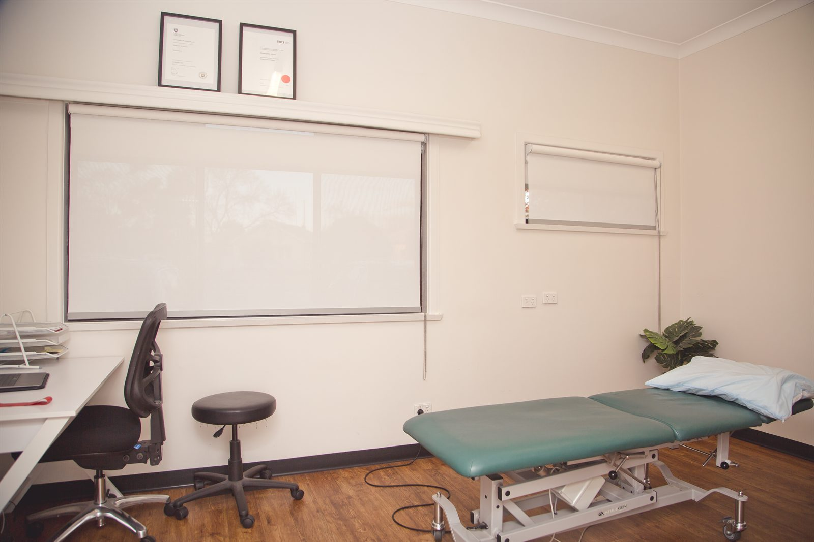

Grouped three ways so you can find your way in quickly: the treatments we provide, the conditions we treat, and how your care can be funded. Every item below has its own page with the detail.
The treatments and programs we deliver. If you already know what you need, start here.
Diagnosis, treatment and staged return-to-sport rehabilitation for athletes at every level.
Learn more02Precise needling of trigger points to release muscular tension and restore movement.
Learn more03Prehab, post-operative rehabilitation and criteria-based return to sport after an ACL injury.
Learn more04Diagnosis, load management and a staged return-to-running plan for runners of every level.
Learn moreIf you know what hurts but not what to call it, start here instead.
How your treatment gets paid for. Most people fall into one of these — and none of them require you to work it out alone.
Workers compensation physiotherapy focused on a safe, sustainable return to work.
Learn more02Goal-based physiotherapy for NDIS participants, in the clinic or at home across the Illawarra.
Learn more03What an appointment costs, and every way it can be funded — private health, Medicare, WorkCover, NDIS.
Learn moreTreated at the clinic, without a dedicated page yet. Get in touch and we will tell you how we can help.

Every appointment at Functional Physiotherapy is one-on-one with your physiotherapist. You are not handed to an assistant halfway through, and you are not left on a machine while three other people are seen.
That structure exists because it produces better results. Assessment continues through the whole appointment, treatment gets adjusted as we go, and the exercise you are given is taught properly rather than printed out. It also means we can be honest with you about how long something will take, because we are the ones watching it change week to week.
Based in Dapto, treating patients from right across the region.
Call us and we will point you to the right place — or book an assessment and we will work it out in person.